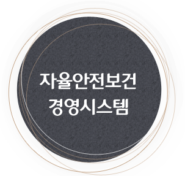
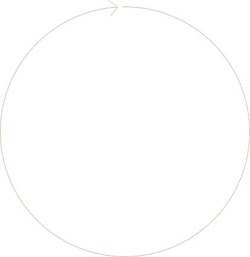

> 지속가능경영>
안전환경경영
안전환경경영
- 인간존중 정신을 바탕으로 고객과 임직원의 안전보건을 최우선합니다.
- 롯데정밀화학은 인간존중과 환경친화적 생산체제 구축을 위한 지속가능한 발전계획을 수립하여 실천함으로써
- 회사의 경영이념을 실현하고 현장밀착 환경안전관리 체계를 바탕으로 「환경안전사고 "ZERO"化」를 통한 쾌적하고 안전한 환경 속에
- "무재해 · 무공해 · 무질병 3無 사업장 달성" Vision을 달성하고자 합니다.


위험성 평가
협의체 회의
점검 및 평가
시정조치/안전교육
경영 검토/현장 지원
지속적인 개선
안전보건 경영 방침
롯데정밀화학은 인간존중과 환경친화적 생산체제 구축을 위한 지속가능한 발전계획을 수립하여 실천함으로써
회사의 경영이념을 실현하고 현장밀착 환경안전관리 체계를 바탕으로 「환경안전사고 "ZERO"化」를 통한 쾌적하고 안전한 환경 속에
"무재해 · 무공해 · 무질병 3無 사업장 달성" Vision을 달성하고자 합니다.
위의 안전보건 경영 방침에 따라 안전활동을 전개하며, 기업의 사회적 책임을 다하기 위해 힘쓰고 있습니다.
Mission
- 기본과 원칙 실천문화아이콘
- 예방형 안전관리 체계아이콘
- 안전보건관리 역량아이콘
- 사전계획에 의한제품관리
- 중점위험 작업집중관리
- 근로자와 함께하는실천안전
- 솔선수범 및자율관리
안전보건 활동
롯데정밀화학은 안전환경보건 활동을 기본으로 한 생산활동을 함에 있어 환경안전의 지속적인 개선과 노력을 경주하며 안전환경보건을 경영활동의 핵심요소로 하여 3無 사업장 달성을 위해 성실히 다음사항을 수행할 것을 선언합니다.
- 환경 안전 보건을 경영의 최우선 과제로 인식하고 제품의 설계, 생산 및 사용, 페기 등 전 과정에 걸쳐 환경안전을 최우선적으로 고려한다.
- 전 임직원은 법규,규정,기타요건을 준수하고, 환경안전사고 예방활동에 동참할 수 있도록 교육.훈련을 지속적으로 실시한다.
- 각종 지원 및 에너지의 효율적인 사용과 환경오염방지 및 안전사고예방과 쾌적한 작업 환경을 유지하기 위하여 선진환경, 안전 , 보건 관리 체계를 구축하고 PSM 제도의 정착 및 발전에 역점을 둔다.
- RC활동을 기반으로 인근 기업, 지역주민, 고객 주주 등 열린 마음으로 대화하며 기업의 사회적 책임을 다한다.